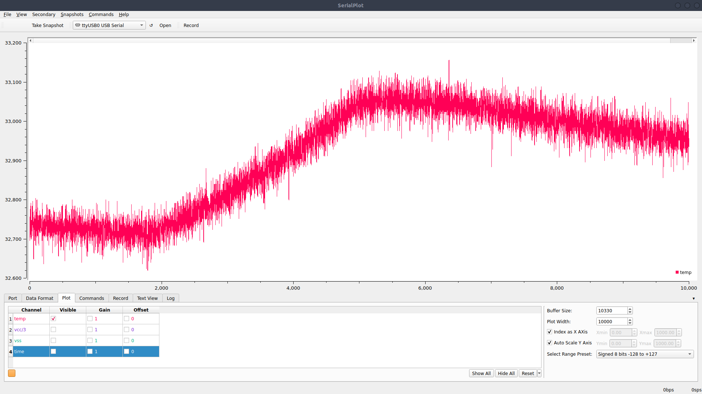

Lab 1
Lab 1 was an introduction to using the artemis board with the arduino ide and showing off various capabilities of the board
LED
The first example was to use the simple blink example used in most microcontrollers to test the basic functionallity and make sure that a sketch could be compiled and uploaded onto the artemis board. In this video, the LED can be seen blinking which is the correct behavior according to the sketch.
Temperature sensor
The next example showed off various analog inputs an ensuring that those inputs and the sensors driving those inputs worked correctly, in particular the temperature sensor on the artemis board. The sketch prints out various values such as the temperature, vss, vcc/3, and current time. In this first video, all labeled values are printed on the serial monitor. As the chip is placed on the hot surface, the temp value slowly rises by about 300 counts showing the temperature sensor operates correctly. the time value also increases consistently as time passes showing this variable increments correctly.
As explained in the Ed Discussion by Joseph Horwitz, I used the serialplot package to display the printed values in a more pleasant form. I modified the printing of values in the sketch to print the values with no prefixes in order to be properly read by the serialplot program. Here is the code that was changed
//Serial.printf("temp(counts):%d vcc/3(counts):%d vss(counts):%d time(ms):%d\n", temp_raw, vcc_3, vss, millis());
Serial.printf("%d %d %d %d\n", temp_raw, vcc_3, vss, millis());
In the video, the output of the analogread sketch can be seen with the temperature sensor singled out to show the change in values. As the chip is placed on the hot surface of the laptop, the temperature value can be seen rising. Once the chip is released from the laptop. The temperature levels off and starts to decrease again.
This photo shows the evolution of the temperature sensor output seen in the video.

Serial communication
The next example showed off the uart communication between the artemis board and the host computer. Serial communication is important for communication between the computer and artemis, so checking this functionality was essential. In the video, The serial monitor shows the program having the artemis board send an initial message. Then, when the user inputs a number or string into the serial monitor, the artemis board echos the sent message back through the serial monitor showing the ability for the computer to send messages to the artemis and for the board to send messages back.
Microphone
The next example shows off the ability to use the artemis board’s microphone as well as the ability to use an FFT in order to do a frequency analysis on the microphone data. Through the serial monitor, the artemis board can be seen displaying the maximum amplitude frequency in the data received from the microphone by doing an FFT. In the video, when I induce a high-frequency whistle, The maximum frequency raises on the serial monitor in response to the whistle. This shows correct functionality of the microphone and its frequency analysis as the frequency of 1800Hz is about the frequency of my whistle.